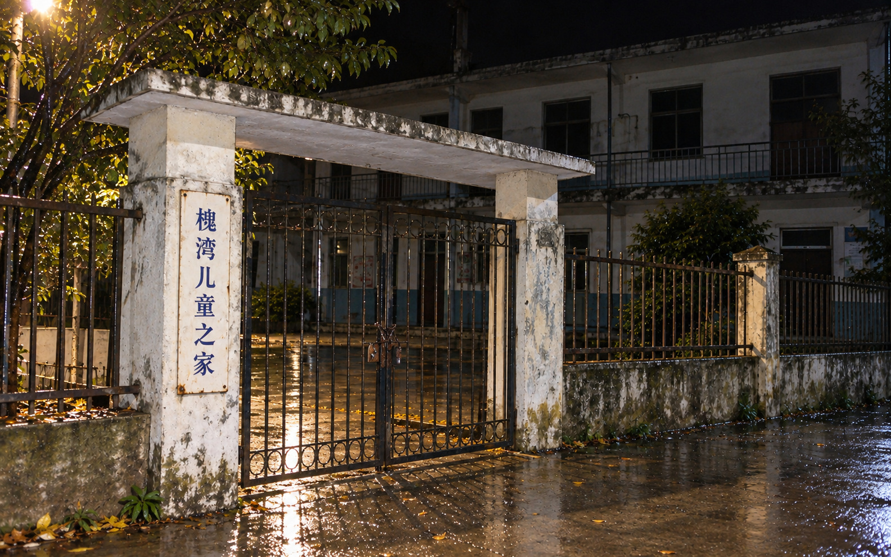
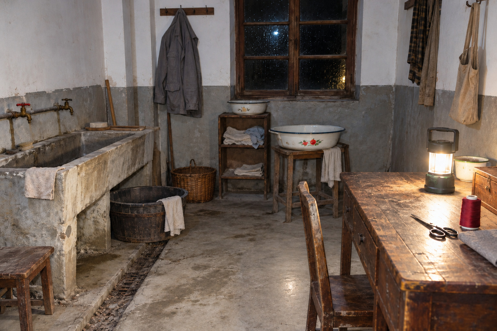
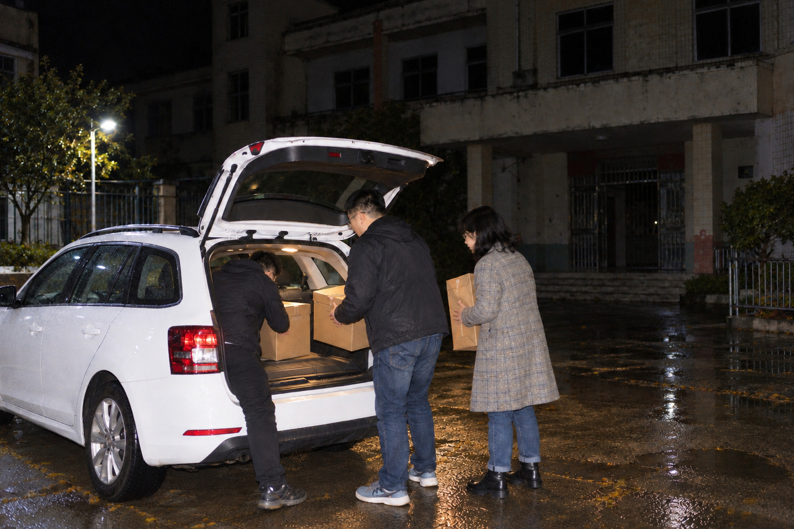

院门外

雨落下来时，周野正在车尾找那台旧数码相机。电池盖的卡扣早坏了，他用橡皮筋箍了两道，举起来试拍，闪光灯把门牌照得发白，远处的楼仍黑着。牌上写“槐湾儿童之家”，他们在网上找到的地址却叫孤儿院。
明早拆除队进场。欧阳澈替物业登记最后一批旧材料，周野来搬箱子，沈知禾负责学校愿意接收的生活记录。三个人大学时做过一次旧街摄影展，那回欧阳澈丢了两张底片；后来谁借了什么，他都要多问一句经手人。
周野“十点前还钥匙，记住了。现在还有人开面馆吧？你别等搬完才说自己吃过了。”
欧阳澈“我也没吃。先别把箱子放水里，面钱赔得起，箱里的纸赔不起。”
沈知禾带了两盏充电工作灯。物业允许清点的房间沿北侧内梯连成一线，南楼梯已经封好；她把圈过的位置给两人看了一遍，将钥匙袋递过去。
沈知禾“原件别补字，能认出多少记多少。你们拿不准的夹在一起，我回去问接收的人。”
欧阳澈把进门时间写在登记夹第一页，笔帽夹到右耳，试了两次才转开锁。门里先涌出一股潮木头的味道。周野抱着箱子跟上来，肩膀擦过门框，响了一声很轻的金属颤音。
门厅

门厅只有靠门一段是湿的。沈知禾把灯挂到矮柜上，三只纸箱终于有了清楚的边。欧阳澈核过箱签，再把今夜的时间写到旧页背面；周野举起相机，一张拍糊了，又补一张。
周野“你那支笔夹耳朵上，不觉得硌？”
欧阳澈“省得写一行找一次。你照片别全叫 IMG，回去我怎么认。”
A 箱给学校，B 箱给拆除队，C 箱暂存。标签是白天留下的，潮气把一角卷了起来；清点说明要求每次移动材料都写经手人。接收联系卡夹在箱单后面，司徒琴的名字旁有一条家属备注。
沈知禾念到“2022 年”时放慢了些。她小时候转过三次学校，后来找旧班主任，只找到一个换了人的办公室；联系卡上的电话至少还有人接。
沈知禾“她女儿说私人的东西也能收。别只装学校要的，夹在柜底的信封也留着。”
周野把原本准备盛废纸的袋子叠好，换了一只干净的。欧阳澈在袋口写了“家属”，暂时没有填物件名称。楼上的活动室还有几页纸没有归箱。
活动室

北侧内梯的最后一级比别处高。周野差点绊到，回头扶住箱底，沈知禾才从他身侧过去，把灯放到活动室门边。小凳子都很矮，只有窗边那张折叠床占着成年人的宽度。
欧阳澈看见床面像刚铺好的白床单，靠墙的一角甚至留着手抚过的平整纹路。他举灯走近，白色却消失了，只剩凹下去的旧帆布。灯光从床脚挪开以后，那道平整的纹路也没有回来。
周野“你刚才在看什么？”
欧阳澈“床上刚才挺白的。我把灯挡住了？”
沈知禾没有替他解释，蹲下去看床架是否还能站稳。柜门被床脚挡住半边，挪开以后，里面露出借用簿和一张粘在底板上的点名纸。
借用簿记着谁丢过胶水盖、谁借儿童剪刀忘了还，另有一句“别给她绿色，她会把整张纸涂满”。周野看到这里笑了，接着又往前翻了一页，像想找出那孩子最后画了什么。
沈知禾“画不在这里。先把这页也夹上，至少名字还没有掉。”
点名纸和床位调整页粘在一起，写的却不是同一种位置：一张记孩子随哪组活动，另一张记夜里睡在哪。欧阳澈沿原折痕摊开两张纸，受潮的后半页始终揭不完整。周野把相机收起来，仍望着床脚，等沈知禾将另一盏灯搬到桌边才跟过去。
服装室

服装室的铁柜门只能开半扇。周野侧身往里照，捐赠短袖按尺码塞在袋里，塑料外皮已经发脆；长桌上有一只搪瓷盘，盘底压着几块背面朝上的白布。
布边留着旧针孔，剪口也不齐。欧阳澈轻轻翻起一角，名字只剩两个可辨的笔画；另一块仍粘着暗红线。他没有强认那个字，先把布签放回原处。
周野“转帖只拍到这些。我进来前还拿那张图给你们讲过。”
沈知禾“原来桌子这么大。你往后退点，袋口那边也拍一张。”
湿衣袋用蓝塑料绳扎着，收拢表记过一次错装：一个黄色杯子被放进去，后来又拿出来。库存领用单和剪裁条各有时间，制作登记却夹在柜门内侧；欧阳澈将三张纸按原折痕摊平。
周野“我小时候也只认一个杯子，摔裂了还要用。”
欧阳澈“你现在只认的那个，是我上回落你家的。”
周野没接这个账。他给盘底垫上一张干纸，凑近看那些旧针孔，再把相机放回兜里。布签确实离开过衣服；它后来被怎样保管，还得把几份交接接上。
二层寝室

寝室门脚卡着翘起的地胶，周野顶了一下才推开。窗边的床没有床板，床头柜里却留着一条薄毯领用页。欧阳澈把灯放低，先照维修牌的日期，再翻照护本。
周野“照片拍这张床，谁都会先数人吧。”
沈知禾“我也先数了。柜里还有东西，等我拿出来再拍。”
柜背画着量身高的铅笔线，旁边写“成 132”。周野拿自己的腰比了一下，没有说话。小事本记着杯子、鞋带和一个关于打呼的抱怨，语气像老师写给接班同事的提醒。
活动室里受潮的调整页，这里还有完整副本。照护页记名字，临调页记原床号和新位置，点名纸又记活动组别；沈知禾翻来覆去看了两遍，没把三种称呼直接写在同一栏。
欧阳澈“四个人放同一页吧。我走到下个房间，又得问你豆豆是谁。”
她把四个名字抄到便记左边，给位置留了空格。周野替她压住翘起来的纸角，等她翻完最后一页才松手。
记录柜
记录柜锁早被拆过，里面只有牛皮袋和散页。周野一抽就带出半年的报销单，纸在他手里滑成扇形；欧阳澈这次没伸手拦，先把灯移到中间。
欧阳澈“右边有柜位号，照号放回去就行。先别把夹在里面的小页掉了。”
周野“终于不嫌我手欠了？”
欧阳澈“因为我也得腾出手翻下一袋。”
司徒琴、邹雪梅、何秋芹都写过当晚的交接。纸上有停顿，也有补写，三人的值班时间重叠。背面半句“先别让她们回寝室”没有主语，沈知禾看了两遍，仍把它原样夹在后面。
2008 年回访留下的一段话
回访纸上，采集员问司徒琴为什么不换练字本封面。她说乔乔把“宁”写错，胳膊一下挡住半张纸；她没去掀，只从笔筒里拿了另一支放在旁边，继续看自己的值班本。过了好一会儿，那孩子才将胳膊移开，在下面重新写。
乔乔问旧字能不能留着，她就将本子合上，说封面归你，下次借别人之前先问你。司徒琴在回访里笑了一下，说后来没真借出去，纸边倒又让孩子涂满了绿色。
据次年回访整理的往事；不是当晚逐字对白。
周野翻回借用簿，找到司徒那句关于绿蜡笔的牢骚，把两张纸放在一起。他没有再问画在哪儿，只用手背抹掉袋子里的一点灰，换了另一只装本子。
袋底的退休便记说本子还在旧柜。欧阳澈伸手压住窗栓，最浅的抽屉却在他们停下说话以后，缓缓滑出来一截。周野已经把手伸向柜里，手指停在半空；欧阳澈仍扶着窗，灯下能看清两人都没有碰到抽屉。
周野“灯给我一下。”
他蹲到柜脚边，等了一会儿才把手伸回来，没有将这只抽屉推到底。交接页提过另存的腕带抄记；沈知禾将回访纸夹好，把灯留在他手边，自己先去开值班室的门。她没有催周野，也没把记录柜关上，走到门边又回头看了一次。
值班室

值班室电话的外线齐根断在墙边。欧阳澈刚把门带拢，周野就伸手扶住门沿，留了一掌宽的缝。沈知禾翻过生活登记册，里面夹着两条腕带抄记，名字、临时位置和缝制时间分成三栏；纸背还压着剪下来的旧胶带。
周野念“陈雨宁”时停了一下。称呼对照上还有豆豆，沈知禾起先另写一行，读到下面才将那一行划掉。
沈知禾“等一下，我刚才多算了一个。你把对照页放中间，我只看了左半边。”
周野“你也会看岔，我刚才就不该那么小声。”
欧阳澈“还好你说了，不然回去清单上又多一行。”
两条抄记旁都写着18:49，交接纸记两人停在桌边却是18:56。沈知禾把已填好的床位便记留在上沿，下面另画一条时间线；欧阳澈先抄了两个时间，笔尖停在中间。周野帮他压住纸，袖口碰到桌沿时忽然缩了一下，随后把掌心平放下来；两人都没有把缺的七分钟连成一件事。
欧阳澈“这一页什么时候记的，就标这一页。前面怎么拿到手的，先别替他们写。”
搪瓷杯里有四支干笔。周野拿一支试了试，只留下浅灰划痕；他插回去时，欧阳澈也伸手摸右耳，摸到自己的笔帽才放下手。洗衣房的返工便条尚未归袋，三人得把那两段被拆过的针脚一起收好。
洗衣房

洗衣房地面比门厅干，沟口塞着落灰。工作台靠墙，抽屉里有半卷暗红线；领用簿从三月翻到五月，纸边比事故那几页磨得更软。
返工便条压在针线盒底下，一段短线仍穿在旧白布边缘。字迹上有水印，页边那个“乔”只剩半个末笔，屋里找不到能与它接在一起的落款。
周野“是不是乔乔写的？她连老师的错字都要改。”
沈知禾“你先别在袋上写，我想等封里那页也找出来。”
她把袋口留空，返工便条放一边，日常簿和次日清点放另一边。欧阳澈读清日期，重新拍了三张，没有给线头单独补一个吓人的近景。
周野去取墙边的灰外套，袖口从他腕上扫过去。布料冷得发硬，碰过的一小块皮肤却留着热水杯刚移开的温度。他抓住衣架，低头看了一会儿手腕，没有再抖衣服；沈知禾将装好的纸递给他，他等袖口离开皮肤，才腾出手接。
周野“这件也别扔。回去晾干，看看有没有洗得掉的泥。”
欧阳澈递了一只袋子。桌边那些东西能解释到哪一步，得写进出处栏；最右边的执笔人一格暂时仍空着。
南楼梯

南楼梯的封板是拆除准备时新钉的，墙上的裂缝已经老了。周野没去推，只把灯转向平台，沈知禾在封板前摊开通道图和水位简记。周野伸手要接灯，手腕还缩在袖子里。她把灯留在自己这边，腾出另一只手帮他压住图角。
图是维修时留下的，能看出房间之间相连，却没有那晚的水。钥匙登记和通行补页各夹在一个袋里，时间差了两分钟。
周野“我刚才把它们当一张纸看了。日期一样，写的动作还真不是一回事。”
欧阳澈“你帮我压图。我把推车那张也拿过来，折在里面。”
送衣推车的移位条尾端沾着泥，写字的人在“太滑”下面划了两道。几个出口都有名字，南楼梯又有停止通行的时间；孩子下楼用的梯和洗衣房推车出门的段，要分别核一遍，纸上的线不能只挑最短一条。
沈知禾“阿成鞋后跟那晚还没缝上。”
周野低头看自己的湿鞋带，终于蹲下系好。欧阳澈沿图上的房间描了一遍，没有越过封板；灯光落到半层就被挡住，下面什么也看不清。
事故补记
正式报告印得平整，同袋手写页却有不同深浅的水痕。欧阳澈读到“转移前完成二次核对，登记无误”，将那一行压在指尖下面，再把当晚交接放到旁边。
装订流转条有上午和下午，补记只有日期，没有具体交入时刻。周野翻到背面找了找，没有另一个签收格。
周野“我刚还想问是谁没让它进去。这个空格，连哪天几点交过来都没记完。”
沈知禾停在那张页边短记。乔乔问老师写了吗，字很小；她用一张干纸垫在下面，等页边的潮气散掉，不再追着纸上不存在的分钟问。
沈知禾“这张也要。以后接收的人只翻报告，至少能看见旁边还夹着它。”
周野递来最干净的袋子。欧阳澈给报告留原位置，添一页2026年的移交说明，准备将能补上的过程与仍缺依据的判断分开写；体育馆接收页放在最上面，四个名字已经能读清。
把名字还回去
桌上没有新房间的纸，却还有三张旧论坛打印件。同一个照片角度出现两次，标题不同，附图的行数也不同；一条替人澄清的回复夹在最后，账号已经注销。欧阳澈给交接原页垫了一张空纸，省去的话写在旁页，旧打印件一张也不划。
周野“我给你们发的是这张。原帖没打开，我以为转的就是全文。”
他把两张纸挪近，让照片下沿对齐。沈知禾没有替他补上缺的一行，去翻夹在旁边的交接原页；欧阳澈把上传日期记在网页栏，事故日期另留一栏。
牛皮袋外层放着一本练字本，退封内的便笺还折着。周野认出封面两个挨在一起的字，想起回访里那条挡着纸的胳膊，手指移到封角的黄胶带上，没有把它揭开。
周野“她现在在哪儿呢？”
沈知禾“袋外写着2015年收件。先看她交来的是什么，我不想把收件人认错。”
欧阳澈先把完整交接句的出处夹好，私人物件仍留原袋。收件签、退回邮戳和老师留本子的便记，各写各的年份；家属袋就在手边，灯不用再挪到别的房间。沈知禾把原袋上的细绳绕开，只松原有的结，等他们将网页夹好，再一起展开。她将退封与本子分开放在袋口，转交签横在下面，免得相邻的两件东西被写成同一次收件。
原袋内页 · 家属接收件
外袋有收件签，原信留在退封内；老师的留本便记与家属卡一并放在这里。下方便记追踪这一件信的去向。
那一晚

水先从门厅外沿进来，低龄组随后上二层。库存干衣领到活动室时，尺码没有来得及细分；湿衣装进袋，能辨认的姓名布签被剪下来，准备缝到写有临时位置的白底带上。
18:56，两名孩子被留在换衣桌边。她们的姓名没有换，底带上的位置却拿反了。临调页被递到桌边，姓名布签拆下后照页重新缝回；乔乔提出的那次提醒，留在了当晚交接中。
19:16，南楼梯停止通行。两分钟后后门钥匙借出，19:20 的补页记下后勤通道已开。送衣推车先移到坡道外，孩子靠内侧扶墙走，鞋底打滑的人让前一个停一停。
19:54，体育馆重新点名。林小满、陈雨宁、乔晚宁、贺成安都有复核记录，四个名字不需要靠怪谈替它们决定去向。
2008 年回访 / 司徒琴的回忆
她说，豆豆那晚抬头问：“为什么叫两个名字？我明明就一个人。”何秋芹告诉她，一个是登记名，一个是大家叫的小名，以后交接会把两边都写上。
小满嫌袖口里的线扎，乔乔则一直看老师补交接，改好了还问写没写。体育馆最后一次点名时，老师把“凝”划掉，写回“宁”；孩子又问起她夹在右耳的笔，笔已经握在她手里。
这些话来自次年回忆；具体用词无法由当晚记录逐字核实。
体育馆的灯亮着，湿鞋放在墙根，黄色杯子终于回到豆豆手里。发生过错误，也有人及时发现；过去并没有因此变得整齐，却足够让这些孩子离开那栋楼，继续过后来各自的日子。

沈知禾把练字本放进家属袋。便笺里说同事都叫她小乔，还问本子能不能留到过年；周野将那句话念到一半，停下来想了想，才说原来她后来也上了班，会向同事解释自己的名字。纸上的人不再只是在洪水里等老师的孩子。
周野将退封与本子挨着放好，封面两个字都朝上。他本想替乔乔把旧字遮住，手伸过去又停下来；便笺说本子别撕，黄胶带也别换，他便将纸袋往旁边移了一点，给翘起的封角留出空处。
周野“司徒老师的女儿住得远吗？这角要是再被快递压一下，胶带就断了。”
沈知禾“先打电话。她要能来取，我给她留着。”
周野沿北侧内梯把箱子搬回门厅。欧阳澈依物业清单检查洗衣房后门和窗栓，将后门锁好，再从进来时的铁门离开；沈知禾拿着两盏工作灯，在门外等他们最后核一次箱数。
离开

雨已经停了。周野先把学校接收箱装进车尾，沈知禾把封好的家属袋放在箱顶，交接页仍夹在学校箱内，欧阳澈在门边将钥匙重新装回封口袋。门牌还在灯光里，明早的工人不会知道他们今晚读过哪一行。
周野“回去我把那帖子撤了，原来给你们发的链接也是它。”
沈知禾“把更正和原页一起留着吧。以后有人还问，至少有地方能往回查。”
周野点头，把箱子往里推稳。欧阳澈绕到车顶取登记夹，纸边被塑料扣挂住了一点；他低头理平，看到说明页背面多了一行蓝黑色的字。
今夜的其他行都有经手人。这行字完整，墨也没有晕开，最右边却空着。欧阳澈先看了时间，再去摸右耳，那里已经没有笔；他的笔在登记夹侧面的扣环里。
欧阳澈“你们谁替我写了离场？”
周野“我没动本子。刚才一直在搬箱子。”
沈知禾“我只写过接收清单。”
手机就在这时亮起来，21:57。屏幕的白光和那行新字落在一起。周野伸出的手慢慢收回，沈知禾将清单搁到车尾门旁；欧阳澈没有把猜到的名字填进去，只把纸原样夹好。
铁门在身后很安静。车发动以前，他们又核了一遍箱数。沈知禾给家属袋贴好原封标签，没在接收人一栏写司徒琴；有些话来得太晚，找到地址也送不到那个人手里了。周野把练字本压在信封上，低声问司徒苗会不会读这封信。沈知禾说会联系她，再把那只袋子放进最不容易被挤到的地方。三个人都在，孩子的名字也都还在；那行没有经手人的字，仍留给今夜。
《槐湾孤儿院》
感谢你读到了最后。
能写清的已经写清。那一格空白，原样留着。